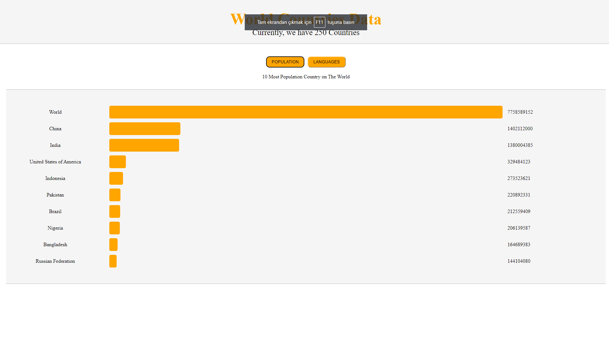

I am studying at Yıldız Technical University as a senior student in the Department of Statistics. I actively participated in various training and certification programs related to my field in order to increase my equipment and competence during my education life. I am open to innovation and self-development in every field. Therefore, while my education life continued, I had the opportunity to actively work as a sales representative in various retail stores and experience business life. As a result of my 3 years of disciplined work experience, I developed myself to be prone to teamwork, to have strong communication in human relations and to think faster and take initiative. When I reach my senior year, I want to participate in internship programs that I think will be useful and put my knowledge into practice in order to further prepare myself to work in the field. I want to progress in the field of data science and data analytics; I want to take part in artificial intelligence projects through my interest in software. I am currently actively looking for internships and jobs in these fields.
Projects
Güneş Sistemi, evrende keşfedilebilen en büyük yapıdır ve onu oluşturan gezegenler ve uydular, farklı kütle çekim endekslerine sahiptir. Bu proje, Güneş Sistemi'ndeki gezegenlerin ve Ay'ın kütle çekim endekslerini inceleyerek, Dünya'daki bir kişinin kilosunun çarpımı ile ne kadar ağırlıkta olacaklarını hesaplamaya odaklanmaktadır. Başlangıçta, Dünya'daki yerçekimi ivmesi 9,8 m/s² olarak kabul edilir. Ancak, her gezegenin farklı bir kütle çekim endeksi vardır, bu da bir kişinin ağırlığının o gezegendeki değişeceği anlamına gelir. Örneğin, Jüpiter'de yerçekimi ivmesi Dünya'dan 2,5 kat daha fazladır, bu da bir kişinin ağırlığının Dünya'daki ağırlığının 2,5 katına çıkacağı anlamına gelir. Bu projemde bu indeki hesaplayıp size göstermektedir.

Bu web sitesi, JavaScript, HTML ve CSS kullanılarak tasarlanmıştır ve dünyadaki en çok konuşulan 10 dil ile en kalabalık 10 ülkenin verilerini görselleştirmektedir. Sitenin amacı, kullanıcıların hızlı bir şekilde bu dil ve ülke verilerini görsel olarak keşfetmelerini sağlamaktır. Kullanıcılar, interaktif grafikler ve görsel öğeler aracılığıyla dil ve ülke sıralamalarını keşfedebilirler. Web sitesi, bilgiyi özgün ve etkileyici bir şekilde sunarak kullanıcıların ilgisini çekmeyi hedefler. Bu sayede, ziyaretçiler daha derin bir anlayış geliştirir ve dünyadaki dil ve nüfus dağılımı hakkında daha fazla bilgi edinir.
Bu web sitesi, dünya üzerindeki tüm ülkelerin isimlerini içeren bir veritabanını sunmaktadır. Site, HTML, CSS ve JavaScript kullanılarak tasarlanmıştır ve kullanıcılara arama ve filtreleme seçenekleri sunmaktadır. Kullanıcılar, ülkelerin isimlerini baş harfleri arasında aratarak veya istedikleri harfleri içeren ülkeleri bulmak için tam isimlerindeki harfleri kontrol ederek hızlı bir şekilde istedikleri ülkeleri bulabilirler. Web sitesi, kullanıcı dostu arayüzü ve sezgisel tasarımıyla kolay kullanım sağlar. Bu sayede, kullanıcılar aradıkları ülkeleri hızlıca bulabilir ve istedikleri bilgilere erişebilirler. Veritabanının kapsamlı olması, web sitesini dünya üzerindeki ülkeler hakkında kapsamlı bir kaynak haline getirir. Bu web sitesi, kullanıcılara ülkelerin isimlerini araştırma ve keşfetme imkanı sunar. Aynı zamanda A dan Z ye veya Z den A ya sıralama yapabilirsiniz.
Bu yazıda, HTML, JavaScript ve CSS kullanılarak tasarlanmış bir leaderboard web sitesinden bahsedeceğim. Bu web sitesi, kullanıcıların farklı etkinlikler, yarışmalar veya oyunlar için liderlik tablolarını görüntülemelerini ve takip etmelerini sağlar. Web sitesinin amacı, kullanıcıların güncel liderlik sıralamalarını görmelerine ve rekabet ortamında kendilerini geliştirmelerine yardımcı olmaktır. Kullanıcılar, web sitesindeki liderlik tablolarını keşfederek en iyi performans gösteren kişileri ve takımları görebilirler. Aynı zamanda, kendileriyle karşılaştırma yapabilir ve ilerlemelerini takip edebilirler. Web sitesi, kullanıcı dostu bir arayüz sunar ve kullanıcılara kolaylıkla gezinme imkanı sağlar. Tasarımı, estetik bir görünümle birlikte kullanıcıların dikkatini çeken ve sıralamaların net bir şekilde görülebildiği bir düzeni içerir.